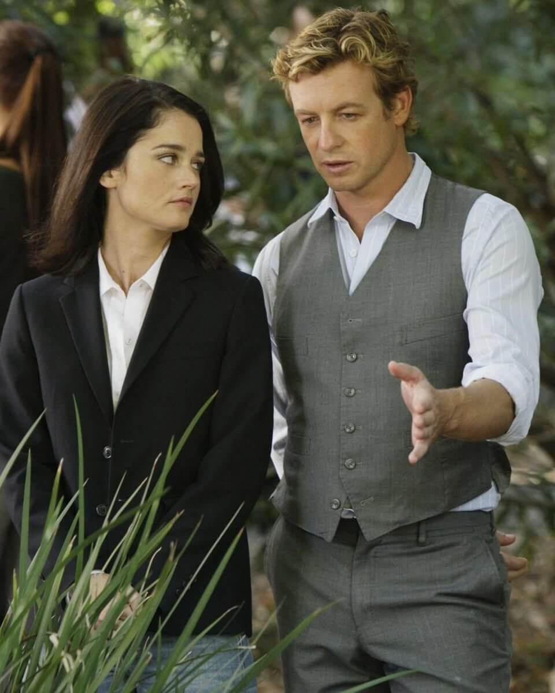

📁
Expedientes Policiales
Unidad de Homicidios CBI
Dossier completo de Patrick Jane, Teresa Lisbon, Kimball Cho, Wayne Rigsby, Grace Van Pelt y aliados con habilidades y datos psicológicos oficiales.
"Mentalista: Alguien que utiliza la agudeza mental, la hipnosis y/o la sugestión... Un maestro manipulador del pensamiento y del comportamiento."
— Definición oficial al inicio de cada episodioBienvenido al espacio definitivo dedicado a The Mentalist. Acompaña al consultor Patrick Jane, a Teresa Lisbon y al equipo del CBI en Sacramento a través de la psicología criminal, los engaños y la persecución implacable de Red John.

"No existen los psíquicos, Teresa. Solo personas que no saben ver."
— Patrick JaneDossier completo de Patrick Jane, Teresa Lisbon, Kimball Cho, Wayne Rigsby, Grace Van Pelt y aliados con habilidades y datos psicológicos oficiales.
151 episodios organizados cronológicamente con sinopsis, capítulos clave y control conmutador para ver u ocultar spoilers de la trama.
El símbolo de sangre, los 7 sospechosos de la lista de Patrick Jane, el poema "Tyger Tyger" de William Blake y la conspiración policial encubierta.
Entrena tu mente con la técnica de Loci de Patrick Jane. Memoriza escenas del crimen, sospechosos y resuelve los desafíos del CBI.